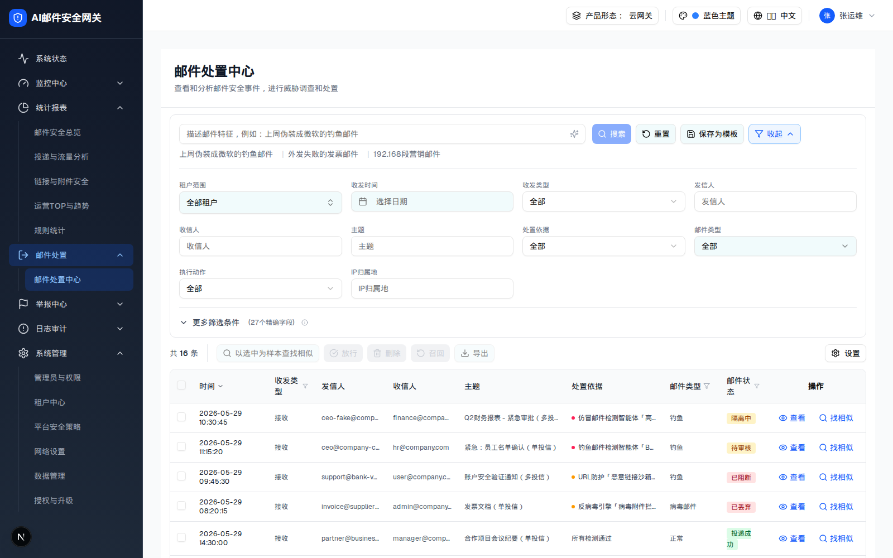
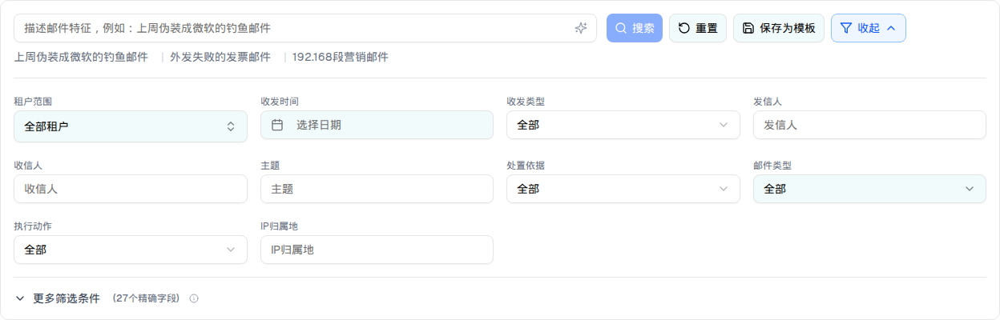
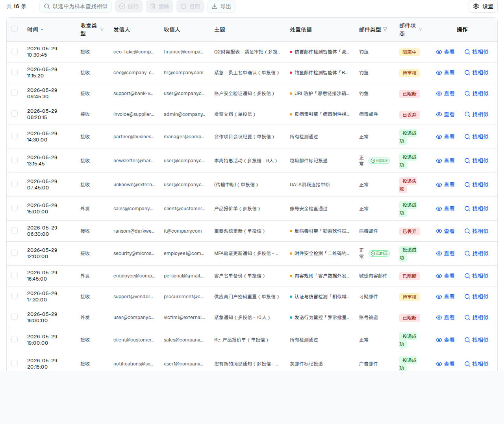
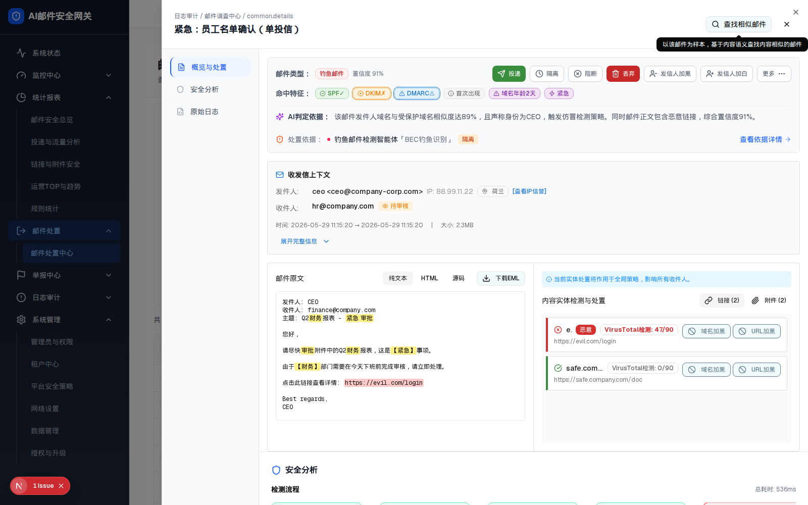
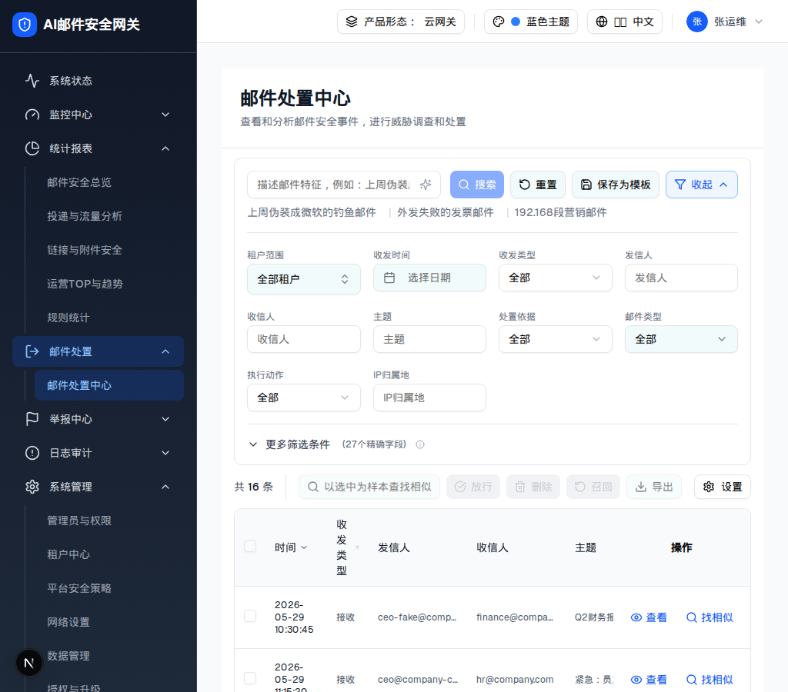

2.1 页面标题区
| 元素 | 文案（zh / en） | 样式 | 行为 |
|---|---|---|---|
| H1 | 邮件处置中心 / Email Disposal Center | text-2xl font-semibold text-gray-900 | 由 moduleName prop 传入；邮件调查中心传入不同标题，其余完全相同 |
| 副标题 | 查看和分析邮件安全事件，进行威胁调查和处置 | text-sm text-gray-500 mt-1 | 静态 |
⚠ demo 的标题区没有面包屑、没有租户切换器（租户范围在搜索区内，且仅平台视角渲染）。
| 规格版本 | v2 |
| 生成日期 | 2026-07-23 |
| demo 源 commit | 2cdad33（详情组件最后变更） |
| spec 源 commit | 804efb9 |
| demo 路由 | /email-handling/disposal-center（侧边栏：邮件处置 > 邮件处置中心） |
| demo 源码 | demo/app/email-handling/disposal-center/page.tsx → components/email-disposal-center/email-disposal-center-page.tsx（仅 91 行：整页委托给 MailInvestigationPage，只换标题）实际实现： components/mail-investigation/mail-investigation-page.tsx(1010) · compact-search-filters.tsx(1148) · investigation-logs-table.tsx(950) · overview-action-section.tsx(1447) · security-analysis-section.tsx(1284) · raw-logs-section.tsx(300)共享配置： lib/disposal-basis-config.ts（处置依据字典）· lib/mail-types.ts（11 类邮件类型） |
| spec 源文档 | spec/0702邮件处置中心.md（V8 规范版，F1–F18）· spec/邮件处置中心.md（旧版，搜索最详细）· spec/邮件处置中心（多租户视角）.md · spec/邮件处置中心—详情查看页面.md（旧弹窗版）· spec/0702邮件处置以及邮件调查中心"查看"页面.md（新抽屉版）· spec/0703处置依据.md · spec/V1邮件状态机.md · spec/V2邮件状态机字典.md · spec/0702邮件调查中心 功能需求文档.md |
| 落地约束 | design/origin/implement.md：四语国际化、复用统一规则系统 action（不新增 action）、冲突先确认、不新增规则系统、优先复用网关现有 API |
| 浏览器验证 | Chromium 1600×1000，demo dev server http://localhost:3100。全部 UI 描述来自运行态 DOM + 点击验证，源码仅作补充 |
| ⚠ 关键架构事实 | 邮件处置中心与邮件调查中心（/logs/mail-investigation）是同一套组件，仅页面标题不同（moduleName prop）。改动共享工作台会同时作用于两个页面。 |
| 产品形态与视角差异 | 「租户范围」筛选器仅在 form === "cloud" && viewer === "platform"（云网关 + 平台管理员视角）时渲染；其余形态该字段整块不渲染。demo 默认形态下不显示（本规格截图即默认形态）。未实现 spec 定义的 AI版/传统版差异（传统版应隐藏 AI 解析、相似搜索、相似度列、找相似）在 demo 中没有任何开关，所有形态渲染相同。 |
| 版本 | 生成日期 | demo commit | spec commit | 变更摘要 |
|---|---|---|---|---|
| v2 | 2026-07-23 | 2cdad33 | 804efb9 | 对齐详情抽屉（日志查看详情）三模块与实时渲染：确认真实详情组件为 mail-investigation Sheet 抽屉（overview-action / security-analysis / raw-logs），email-disposal-center/detail-modal + tabs/ 为死代码；逐层修正 layer-10~14 的组件预览 / 元素表 / DOM 树比对表 / 交互 JS；记录 demo 实测未翻译 i18n key（面包屑 common.details、安全分析阶段5 智能体名 pipeline.intentAgent/marketingAgent/phishingAgent/retrospectAgent）等交互与样式差异 |
| v1 | 2026-07-14 | 804efb9 | 8db3a98 | 初版：搜索/筛选（含 27 精确字段条件组）、日志表格（批量处置 + 改判 finalType）、详情抽屉三模块（概览与处置 / 安全分析 / 原始日志）、按收件人粒度处置矩阵；标注 9 篇 PRD 之间的 12 处互相冲突与 demo 的取舍 |
| 区域 | 位置 | 容器 class | 内容 |
|---|---|---|---|
| A 标题区 | 顶部 | border-b border-gray-200 p-6 | H1「邮件处置中心」+ 副标题「查看和分析邮件安全事件，进行威胁调查和处置」 |
| B 搜索与筛选区 | 标题下 | bg-white mx-4 my-3 → rounded-lg border p-4 | AI 搜索框（60% 宽）+ 搜索/重置/保存为模板/收起 + 示例提示词 + 高级筛选面板（4列网格）+ 更多筛选条件（27 字段条件组） |
| C 列表区 | 主体 | space-y-3 px-4 pb-4 flex-1 overflow-hidden flex flex-col | 工具条（共 N 条 + 批量操作 + 设置）+ 表格（sticky 表头、sticky 操作列）+ 分页 |
| D 详情抽屉 | 右侧覆盖 | Sheet side=right w-[80vw] | 头部（面包屑 + 主题 + 找相似 + 关闭）+ 左侧 192px 锚点导航 + 右侧滚动内容（3 模块） |

| 元素 | 文案（zh / en） | 样式 | 行为 |
|---|---|---|---|
| H1 | 邮件处置中心 / Email Disposal Center | text-2xl font-semibold text-gray-900 | 由 moduleName prop 传入；邮件调查中心传入不同标题，其余完全相同 |
| 副标题 | 查看和分析邮件安全事件，进行威胁调查和处置 | text-sm text-gray-500 mt-1 | 静态 |
⚠ demo 的标题区没有面包屑、没有租户切换器（租户范围在搜索区内，且仅平台视角渲染）。
| 元素 | 类型 | 文案 / 占位符 | 默认值 | 禁用条件 | 行为 |
|---|---|---|---|---|---|
| AI 搜索输入框 | Input + Sparkles 图标 | 占位符「描述邮件特征，例如：上周伪装成微软的钓鱼邮件」 | 空 | 样本模式 / AI 解析中 | 有输入时边框变蓝（border-blue-500）；回车触发搜索 |
| 搜索 | Button(primary, 蓝) | 搜索 / Search | — | 无输入且非样本模式时 disabled | 点击 → 1s loading（Loader2 自旋，模拟 AI 解析）→ 触发查询 |
| 重置 | Button(outline)+RotateCcw | 重置 / Reset | — | — | 清空搜索词 + 全部筛选 + 已选条件 + 条件组 |
| 保存为模板 | Button(outline)+Save | 保存为模板 | — | — | demo 无 onClick（点击无任何反应），仅有 Tooltip「保存当前筛选条件为模板」 |
| 收起 / 高级筛选 | Button(outline)+Filter | 收起（展开态）/ 高级筛选（收起态） | 展开 | — | 切换高级筛选面板；展开时按钮高亮蓝底 |
| 示例提示词 ×3 | text button | 上周伪装成微软的钓鱼邮件 | 外发失败的发票邮件 | 192.168段营销邮件 | — | 样本模式下整行不渲染 | 点击填入搜索框 |
| 租户范围 | TenantSelector | 全部租户 | ALL_TENANTS | 按名称/编码搜索租户 | |
| 收发时间 | LocalizedDateInput | 选择日期 | 空 | — | 单日期（不是范围） |
| 收发类型 | Select | 全部 / 接收 / 外发 / 域内 | 全部 | — | 过滤 direction |
| 发信人 / 收信人 / 主题 / IP归属地 | Input ×4 | 同名占位符 | 空 | — | 大小写不敏感 includes 模糊匹配 |
| 处置依据 | Select | 全部 / 命中钓鱼链接 / 反病毒检出 / 沙箱检测异常 / 深度内容异常 / 本地策略命中 / 全部检测通过 | 全部 | — | ⚠ 只进「已选条件 chips」，不参与实际过滤（FilterValues 里没有该字段） |
| 邮件类型 | Popover 多选 | 全部（未选时）/ 逗号拼接已选 | [] | — | 11 类多选，见层级 1 |
| 执行动作 | Select | 全部 / 投递 / 隔离 / 审核 / 丢弃 / 阻断 / 标记投递 | 全部 | — | ⚠ 同样不参与实际过滤（filteredLogs 未使用 executionAction） |
| 更多筛选条件 | 折叠区 + Info 图标 | 更多筛选条件（27个精确字段） | 收起 | — | 见层级 2 |
| 已选条件 chips | Badge + X | 「已选条件:」+ chips + 「清空」 | 无 | — | ⚠ 仅在高级筛选收起时渲染（selectedConditions.length > 0 && !showAdvanced）；默认展开态下看不到 |

| 比对项 | demo 实际 DOM | 提取的 HTML | 是否一致 |
|---|---|---|---|
| 根节点 | div.bg-white.mx-4.my-3 | 同 | 一致 |
| 后代节点数（默认态） | 102 | 102 | 一致 |
| 高级筛选面板 | 已展开（showAdvanced 初值 = true） | 已展开 | 一致（源码注释写「默认折叠」，与实际渲染不符 → §9 D1） |
| 租户范围字段 | 未渲染（默认形态 form≠cloud） | 未包含 | 一致 |
| 「邮件状态」筛选项 | 未渲染（labels 里定义了 emailStatus 文案但 UI 没有该控件） | 未包含 | 一致 → §9 D2 |
| 网格布局 | grid grid-cols-4 gap-4，共 8 个字段 + 1 个空占位 | 同 | 一致 |
| 层级 | 名称 | 触发路径 | 详情链接 |
|---|---|---|---|
| 0 | 默认态 | 页面加载 | 上方内嵌 |
| 1 | 邮件类型多选 Popover | 点击「邮件类型」下拉按钮 | 查看详情 → |
| 2 | 更多筛选条件（27 字段 + 条件组 AND/OR） | 点击「更多筛选条件」 | 查看详情 → |
| 3 | 样本检索态 | 表格行「找相似」/ 批量「以选中为样本查找相似」/ 详情抽屉「查找相似邮件」 | 查看详情 → |
时间 | 发信人 | 收信人 | 主题 | 处置依据 | 操作 | ||||
|---|---|---|---|---|---|---|---|---|---|
| 2026-05-29 10:30:45 | 接收 | ceo-fake@company-security.com | finance@company.com, hr@company.com, admin@company.com, user1@company.com, user2@company.com | Q2财务报表 - 紧急审批（多投信） | 仿冒邮件检测智能体「高管仿冒识别」· 判定为身份仿冒 | 钓鱼 | 隔离中 | ||
| 2026-05-29 11:15:20 | 接收 | ceo@company-corp.com | hr@company.com | 紧急：员工名单确认（单投信） | 钓鱼邮件检测智能体「BEC钓鱼识别」· 判定为钓鱼邮件 | 钓鱼 | 待审核 | ||
| 2026-05-29 09:45:30 | 接收 | support@bank-verify.com | user@company.com, sales@company.com, marketing@company.com | 账户安全验证通知（多投信） | URL防护「恶意链接沙箱检测」· 检测到恶意链接 | 钓鱼 | 已阻断 | ||
| 2026-05-29 08:20:15 | 接收 | invoice@supplier-fake.com | admin@company.com | 发票文档（单投信） | 反病毒引擎「病毒附件拦截」· 发票文档.exe 检出 Trojan.Generic | 病毒邮件 | 已丢弃 | ||
| 2026-05-29 14:30:00 | 接收 | partner@business.com | manager@company.com | 合作项目会议纪要（单投信） | 所有检测通过 | 正常 | 投递成功 | ||
| 2026-05-29 13:15:45 | 接收 | newsletter@marketing.com | user@company.com, sales1@company.com, sales2@company.com, marketing@company.com, dev@company.com, ops@company.com, support@company.com, intern@company.com | 本周特惠活动（多投信 - 8人） | 垃圾邮件标记投递 | 正常已纠正 | 投递成功 | ||
| 2026-05-29 07:45:00 | 接收 | unknown@external.com | user@company.com | (传输中断)（单投信） | DATA阶段连接中断 | 正常 | 投递失败 | ||
| 2026-05-29 15:00:00 | 外发 | sales@company.com | client@customer.com, partner@vendor.com | 产品报价单（多投信） | 账号安全检查通过 | 正常 | 投递成功 | ||
| 2026-05-29 06:30:00 | 接收 | ransom@darkweb-mail.com | it@company.com | 重要系统更新（单投信） | 反病毒引擎「勒索软件拦截」· 系统更新.exe 检出 Ransom.WannaCry.A | 病毒邮件 | 已丢弃 | ||
| 2026-05-29 12:00:00 | 接收 | security@microsoft-verify.com | employee1@company.com, employee2@company.com, employee3@company.com, employee4@company.com | MFA验证更新通知（多投信 - 4人） | 附件安全检测「二维码钓鱼检测」· 检测到二维码 | 正常已纠正 | 投递成功 | ||
| 2026-05-29 16:45:00 | 外发 | employee@company.com | personal@gmail.com | 客户名单备份（单投信） | 内容规则「客户数据外发管控」· 命中 内容组 | 敏感内容邮件 | 已阻断 | ||
| 2026-05-29 17:30:00 | 接收 | support@vendor-portal.net | procurement@company.com | 供应商门户密码重置（单投信） | 认证与仿冒检测「相似域名仿冒检测」· 发件人格式异常 | 可疑邮件 | 待审核 | ||
| 2026-05-29 18:00:00 | 外发 | user@company.com | victim1@external.com, victim2@external.com, victim3@external.com, victim4@external.com, victim5@external.com, victim6@external.com, victim7@external.com, victim8@external.com, victim9@external.com, victim10@external.com | 紧急通知（多投信 - 10人） | 发送行为管控「异常批量外发管控」· user@company.com 发信行为异常 | 账号被盗 | 已阻断 | ||
| 2026-05-29 19:00:00 | 接收 | client@customer.com | sales@company.com | Re: 产品报价单（单投信） | 所有检测通过 | 正常 | 投递成功 | ||
| 2026-05-29 20:15:00 | 接收 | notifications@social-platform.com | user1@company.com, user2@company.com, user3@company.com, user4@company.com, user5@company.com, user6@company.com | 您有新的消息通知（多投信 - 6人） | 灰邮件标记投递 | 广告邮件 | 投递成功 | ||
| 2026-06-08 14:23:16 | 接收 | service@cacter-fake.com | user1@company.com | 您的账户存在异常登录，请立即验证（单投信） | 钓鱼邮件检测智能体「钓鱼邮件智能识别」· 判定为钓鱼邮件 | 钓鱼 | 隔离中 |
确认放行选中的邮件？放行后邮件将投递至用户邮箱。
误判纠正：放行后将该邮件的类型改判为下方所选类型（引擎原始判定仍保留用于审计与误报率统计）。
确认删除选中的邮件？删除后不可恢复。
确认召回选中的邮件？召回成功后将从用户邮箱移除。
召回成功率受用户是否已读、客户端类型影响
漏报纠正：召回后将该邮件的类型改判为下方所选类型（引擎原始判定仍保留用于审计与漏报率统计）。
时间 | 发信人 | 收信人 | 主题 | 处置依据 | 操作 | |||||
|---|---|---|---|---|---|---|---|---|---|---|
| 2026-05-29 10:30:45 | - | 接收 | ceo-fake@company-security.com | finance@company.com, hr@company.com, admin@company.com, user1@company.com, user2@company.com | Q2财务报表 - 紧急审批（多投信） | 仿冒邮件检测智能体「高管仿冒识别」· 判定为身份仿冒 | 钓鱼 | 隔离中 | ||
| 2026-05-29 11:15:20 | 92% | 接收 | ceo@company-corp.com | hr@company.com | 紧急：员工名单确认（单投信） | 钓鱼邮件检测智能体「BEC钓鱼识别」· 判定为钓鱼邮件 | 钓鱼 | 待审核 | ||
| 2026-05-29 09:45:30 | 64% | 接收 | support@bank-verify.com | user@company.com, sales@company.com, marketing@company.com | 账户安全验证通知（多投信） | URL防护「恶意链接沙箱检测」· 检测到恶意链接 | 钓鱼 | 已阻断 | ||
| 2026-05-29 08:20:15 | 98% | 接收 | invoice@supplier-fake.com | admin@company.com | 发票文档（单投信） | 反病毒引擎「病毒附件拦截」· 发票文档.exe 检出 Trojan.Generic | 病毒邮件 | 已丢弃 | ||
| 2026-05-29 14:30:00 | 98% | 接收 | partner@business.com | manager@company.com | 合作项目会议纪要（单投信） | 所有检测通过 | 正常 | 投递成功 | ||
| 2026-05-29 13:15:45 | 77% | 接收 | newsletter@marketing.com | user@company.com, sales1@company.com, sales2@company.com, marketing@company.com, dev@company.com, ops@company.com, support@company.com, intern@company.com | 本周特惠活动（多投信 - 8人） | 垃圾邮件标记投递 | 正常已纠正 | 投递成功 | ||
| 2026-05-29 07:45:00 | 70% | 接收 | unknown@external.com | user@company.com | (传输中断)（单投信） | DATA阶段连接中断 | 正常 | 投递失败 | ||
| 2026-05-29 15:00:00 | 73% | 外发 | sales@company.com | client@customer.com, partner@vendor.com | 产品报价单（多投信） | 账号安全检查通过 | 正常 | 投递成功 | ||
| 2026-05-29 06:30:00 | 85% | 接收 | ransom@darkweb-mail.com | it@company.com | 重要系统更新（单投信） | 反病毒引擎「勒索软件拦截」· 系统更新.exe 检出 Ransom.WannaCry.A | 病毒邮件 | 已丢弃 | ||
| 2026-05-29 12:00:00 | 91% | 接收 | security@microsoft-verify.com | employee1@company.com, employee2@company.com, employee3@company.com, employee4@company.com | MFA验证更新通知（多投信 - 4人） | 附件安全检测「二维码钓鱼检测」· 检测到二维码 | 正常已纠正 | 投递成功 | ||
| 2026-05-29 16:45:00 | 89% | 外发 | employee@company.com | personal@gmail.com | 客户名单备份（单投信） | 内容规则「客户数据外发管控」· 命中 内容组 | 敏感内容邮件 | 已阻断 | ||
| 2026-05-29 17:30:00 | 77% | 接收 | support@vendor-portal.net | procurement@company.com | 供应商门户密码重置（单投信） | 认证与仿冒检测「相似域名仿冒检测」· 发件人格式异常 | 可疑邮件 | 待审核 | ||
| 2026-05-29 18:00:00 | 99% | 外发 | user@company.com | victim1@external.com, victim2@external.com, victim3@external.com, victim4@external.com, victim5@external.com, victim6@external.com, victim7@external.com, victim8@external.com, victim9@external.com, victim10@external.com | 紧急通知（多投信 - 10人） | 发送行为管控「异常批量外发管控」· user@company.com 发信行为异常 | 账号被盗 | 已阻断 | ||
| 2026-05-29 19:00:00 | 93% | 接收 | client@customer.com | sales@company.com | Re: 产品报价单（单投信） | 所有检测通过 | 正常 | 投递成功 | ||
| 2026-05-29 20:15:00 | 75% | 接收 | notifications@social-platform.com | user1@company.com, user2@company.com, user3@company.com, user4@company.com, user5@company.com, user6@company.com | 您有新的消息通知（多投信 - 6人） | 灰邮件标记投递 | 广告邮件 | 投递成功 | ||
| 2026-06-08 14:23:16 | 77% | 接收 | service@cacter-fake.com | user1@company.com | 您的账户存在异常登录，请立即验证（单投信） | 钓鱼邮件检测智能体「钓鱼邮件智能识别」· 判定为钓鱼邮件 | 钓鱼 | 隔离中 |
visibleColumns 默认 8 列 + 复选框列 + 操作列）| # | 列 | 字段 | 渲染 | 表头筛选 |
|---|---|---|---|---|
| 0 | 复选框 | — | 全选 Checkbox（作用于当前页） | — |
| 1 | 时间 | time | text-xs，带 ChevronDown 图标（但无排序逻辑） | — |
| 1.5 | 相似度 | similarityScores[id] | 仅样本态渲染；≥90% 绿 / ≥70% 琥珀 / 其余灰 | — |
| 2 | 收发类型 | direction | 接收 / 外发 / 域内 | ✓ 多选 |
| 3 | 发信人 | sender | truncate max-w-32 | — |
| 4 | 收信人 | recipient | truncate max-w-32（多收件人为逗号拼接串） | — |
| 5 | 主题 | subject | truncate max-w-48 | — |
| 6 | 处置依据 | disposalBasis → 降级 reason | 阶段色点 + 「模块「规则名」· 命中简述」，Tooltip 展示命中详情 + 规则ID + 动作 | — |
| 7 | 邮件类型 | finalType ?? mailType | 有 finalType 时显示纠正后类型 + 绿色「已纠正」角标（Tooltip：原判定 → 纠正为 + 来源） | ✓ 多选（11 类） |
| 8 | 邮件状态 | deliveryStatus | 13 状态徽标（配色见下） | ✓ 多选（13 态） |
| 9 | 操作 | — | sticky right-0：查看 / 找相似 | — |
getStatusColor，浏览器实测）| 配色 | 状态 |
|---|---|
| 绿 bg-green-100 | 投递成功 delivered、召回成功 recalled |
| 红 bg-red-100 | 已阻断 blocked、已丢弃 discarded、投递失败 delivery_failed、召回失败 recall_failed、已删除 deleted |
| 琥珀 bg-amber-100 | 隔离中 quarantined、待审核 pending_review |
| 蓝 bg-blue-100 | 处理中 processing、延迟检测中 delay_detecting、投递中 delivering、召回中 recalling |
| 按钮 | 启用条件（实测） | 禁用态 Tooltip | 确认弹窗 |
|---|---|---|---|
| 以选中为样本查找相似 | 1 ≤ 选中数 ≤ 10 | 最多支持选择 10 封邮件作为样本 | 无（直接进入样本态） |
| 放行 | 选中集合中至少一封 quarantined 或 pending_review | 仅隔离中或待审核的邮件支持放行 | 有（含改判下拉，默认「正常邮件」） |
| 删除 | 选中集合中至少一封属于 quarantined/pending_review/delivered/delivery_failed/recall_failed | 该状态邮件不支持删除 | 有（红色警告「删除后不可恢复」） |
| 召回 | 选中数 ≤ 10 且 至少一封 delivered | >10 封：最多支持选择 10 封邮件进行召回；否则：仅投递成功或已放行的邮件支持召回 | 有（含风险提示 + 改判下拉，默认「垃圾邮件」） |
| 导出 | 选中数 ≥ 1 | — | demo 无 onClick（按钮可点但无行为） |
| 设置（右上） | 常态可点 | — | demo 无 onClick（列显隐配置未实现） |
⚠ 批量放行/删除是"部分执行"语义：只要选中集合里有一封合规邮件按钮就启用，确认后只对合规的那些邮件生效，不合规的静默跳过（无失败明细弹窗）。这与 0702邮件处置中心 TC-B09「按钮整体禁用」冲突，与 多租户视角 TC-B03「仅放行合规项」一致 → §9 D6。
每页 50 / 100 / 200（原生 <select>，默认 100），前后翻页按钮 + 「当前页 / 总页数」。切换每页条数会重置到第 1 页。

| 比对项 | demo 实际 DOM | 提取的 HTML | 是否一致 |
|---|---|---|---|
| 根节点 | div.space-y-3.px-4.pb-4.flex-1.overflow-hidden.flex.flex-col | 同 | 一致 |
| 后代节点数 | 473 | 473 | 一致 |
| 数据行 | 16 <tr> | 16 | 一致 |
| 表头列 | 10 <th>（含复选框列与操作列，无相似度列） | 10 | 一致 |
| 带表头筛选的列 | 3（收发类型 / 邮件类型 / 邮件状态，各为 button + Filter 图标） | 3 | 一致 |
| 批量按钮初始态 | 5 个全部 disabled（灰底 bg-gray-200 text-gray-400） | 同 | 一致 |
| 「已选 N 条」 | 未选中时不渲染该 span | 不包含（预览引擎按需插入） | 一致 |
| 「已纠正」角标 | 2 行（inv-6 user_recall、inv-10 admin_release） | 2 行 | 一致 |
| 层级 | 名称 | 触发路径 | 详情链接 |
|---|---|---|---|
| 0 | 表格默认态 | 页面加载 | 上方内嵌 |
| 1 | 表头筛选 Popover | 点击表头「邮件状态 / 收发类型 / 邮件类型」 | 查看详情 → |
| 2 | 批量操作栏激活（含召回 10 封上限） | 勾选行 / 全选 | 查看详情 → |
| 3 | 放行确认弹窗（改判 finalType） | 层级2 → 点「放行」 | 查看详情 → |
| 4 | 删除确认弹窗 | 层级2 → 点「删除」 | 查看详情 → |
| 5 | 召回确认弹窗（风险提示 + 改判） | 层级2 → 点「召回」 | 查看详情 → |
| 6 | 样本检索态（相似度列） | 行内「找相似」/ 批量「以选中为样本查找相似」 | 查看详情 → |
demo 采用的是「抽屉版」而不是旧 PRD 的「弹窗 5 Tab 版」：右侧 Sheet，宽 80vw，左侧 192px 固定锚点导航（概览与处置 / 安全分析 / 原始日志），右侧滚动内容区（滚动到 30% 视口位置自动高亮对应导航项）。
| 区域 | 内容 | 关键行为 |
|---|---|---|
| 头部 | 面包屑「日志审计 / 邮件调查中心 / common.details」+ 邮件主题（H2）+ 「查找相似邮件」按钮 + 关闭 X | ⚠ 两处实测问题：① 面包屑第二段写死为邮件调查中心（t("nav.mailInvestigation")），处置中心页下也显示它；② 第三段 t("common.details") 因 zh 词典缺该 key，实际渲染为原始 key common.details（非"详情"）→ §9 D9 |
| 左侧导航 | 概览与处置（FileText）/ 安全分析（Shield）/ 原始日志（FileCode） | 点击平滑滚动；滚动时自动高亮（阈值 = 容器高度 30%）；激活态左侧 2px 蓝条 + 蓝底 |
| 模块一 概览与处置 | 威胁摘要卡片（邮件类型 + 置信度 + 处置按钮 + 命中特征 + AI 判定依据 + 处置依据摘要）、收发信上下文卡片、研判工作台（邮件原文 + 内容实体检测与处置） | 见层级 1 / 2 |
| 模块二 安全分析 | 处置依据（策略模块/规则/命中/检测标签）+ 检测流程（5 阶段管线）+ 事后处置时间线 + 关联分析（4 维度） | 见层级 3 |
| 模块三 原始日志 | 日志条数 + 搜索框（实时过滤）+ 下载 + 复制全部 + 按级别着色的日志行 | 见层级 4 |

| 层级 | 名称 | 触发路径 | 详情链接 |
|---|---|---|---|
| 1 | 概览与处置（单收件人） | 点击单收件人邮件行的「查看」 | 查看详情 → |
| 2 | 收件人状态矩阵（多收件人）+ 批量操作 | 点击多收件人邮件行的「查看」 | 查看详情 → |
| 3 | 模块二 安全分析 | 左侧导航「安全分析」/ 处置依据「查看依据详情」 | 查看详情 → |
| 4 | 模块三 原始日志 | 左侧导航「原始日志」 | 查看详情 → |
| 5 | 详情内弹窗组（加黑/加白/投递/丢弃/召回/批量结果/更多菜单） | 概览区各处置按钮 | 查看详情 → |
interface LogItem {
id: string; tid: string; tenantId?: string; time: string
direction: "incoming" | "outgoing" | "internal"
sender: string; recipient: string // 多收件人 = 逗号拼接的单个字符串
subject: string
action: "deliver" | "quarantine" | "discard" // ⚠ 类型只有 3 个，但 mock 数据里出现了 "block"
reason: string // 兜底文案（无 disposalBasis 时展示）
disposalBasis?: { policyKey, ruleName, ruleId, action, hitValues?, detectionTags? }
mailType: 11 类枚举 // 引擎原始判定，永久保留（审计/误报率）
finalType?: 11 类枚举 // 人工改判后类型
correctionSource?: "admin_release" | "admin_recall" | "user_recall"
deliveryStatus: 13 态 // processing|delay_detecting|blocked|discarded|
// quarantined|pending_review|delivering|delivered|
// delivery_failed|recalling|recalled|recall_failed|deleted
sourceIp; ipLocation; cluster; attachmentCount; hasQrCode; score
hitSource?: "engine" | "rule" | "blacklist" // rule/blacklist 为确定性判定，不显示 0% 置信度
accountSecurityCheck?; intentDetection?; contentAnalysis?; urlSandbox?; policyCheck?; antivirusCheck?
greyMail?: { confidence, type, action, hitRules[], strategyName, modelVersion }
phishingAgent?: PhishingAgentDetail // 钓鱼智能体详细日志（沙箱/智能体/链接研判/处置记录）
}| 能力 | PRD（4 篇给了 4 套，互相冲突） | 网关现有 API | 结论 |
|---|---|---|---|
| 列表查询 | GET /api/v1/disposal/mails / /disposal/logs / POST /api/mail-logs/search | GET /api/v1/mail-logs、GET /api/v1/mail-logs/search、GET /api/v1/mail-logs/fields | 复用 |
| 详情 | GET /api/v1/disposal/mails/{id} / GET /api/v1/mail/{id}/detail | GET /api/v1/mail-logs/:id + GET /api/v1/mail-logs/:id/events | 复用（两个 API 协同 = 概览 + 时间线） |
| 批量处置（放行/删除 + 改判） | POST /api/v1/disposal/mails/actions | POST /api/v1/mail-logs/bulk-dispose（action: release|delete + final_type；release 时写 SetEmailTypeOverride(..., OriginAdminRelease)） | 复用；仅支持 release / delete 两个 action |
| 召回 | 同上（action=recall） | POST /api/v1/mail-logs/recall（独立端点，带 final_type / correction_source） | 复用 |
| 投递 / 丢弃 / 阻断（详情抽屉的按收件人处置） | POST /api/v1/mail/{id}/disposal（含 recipient + version 乐观锁） | 网关 bulk-dispose 只有 release/delete，没有按收件人粒度、没有 deliver/discard/block、没有乐观锁 version | 缺口 → §10 Q2 |
| AI 语义解析 | POST /api/mail-logs/parse | POST /api/v1/mail-logs/parse-query | 复用 |
| 找相似（单/多样本） | POST /api/mail-logs/similar | GET /api/v1/mail-logs/:id/similar + POST /api/v1/mail-logs/similar-multi | 复用 |
| 下载 EML / 预览 | 「下载原文(eml)」 | GET /api/v1/mail-logs/:id/eml、GET /api/v1/mail-logs/:id/preview | 复用 |
| 导出 | 「导出查询结果」 | GET /api/v1/mail-logs/export | 复用（demo 按钮未接） |
| 事后通知收件人 | 抽屉「事后通知」按钮 | POST /api/v1/mail-logs/:id/notify | 复用 |
| 发信人加黑/加白 | 抽屉「发信人加黑/加白」（含范围 本租户/全系统 + 含子域） | 统一规则系统的发件人黑白名单规则（不新增规则系统，implement.md 第 5/12 条） | 需映射到统一规则系统的 page 字段 + 现有 action（reject/accept），不新增 action |
| 链接/附件实体加黑（域名/URL/哈希） | 抽屉右栏「域名加黑 / URL加黑 / 哈希加黑」 | URL 防护规则 / 附件安全规则（统一规则系统） | 同上，需确认落到哪个规则页 → §10 Q3 |
lib/disposal-basis-config.ts，与 spec/0703处置依据.md 对齐）| 阶段 | 色点 | policyKey（规则 ID 前缀） | 模块名 |
|---|---|---|---|
| 阶段一 连接层 | 蓝 bg-blue-500 | IPFREQ- / IPBL- / RBL- / OVERSEAS- | IP频率限制 / IP黑白名单 / RBL过滤 / 境外邮件 |
| 阶段二 身份层 | 青 bg-cyan-500 | SBL- / AUTH- / BEHAVIOR- / RCPT- / UBL- | 发件人黑白名单 / 认证与仿冒检测 / 发送行为管控 / 收件人检测 / 用户黑白名单 |
| 阶段三 内容层 | 琥珀 bg-amber-500 | ATT-BASIC- / ATT-AV- / ATT-QR- / ATT-ENC- / URL- / CR- / INTENT- | 附件安全检测 / 反病毒引擎 / 二维码 / 加密附件 / URL防护 / 内容规则 / 意图引擎 |
| 阶段四 智能分析层（AI 形态） | 玫红 bg-rose-500 | AI-PHISH- / AI-SPOOF- / AI-TRACE- | 钓鱼邮件检测智能体 / 仿冒邮件检测智能体 / 威胁回溯智能体 |
| 阶段五 综合策略 | 绿 bg-emerald-500 | SIM- / ACF- | 相似邮件检测 / 高级内容过滤 |
列表页文案 = 模块「规则名」· 命中简述（30–40 字内）；详情页「命中」行为变量替换后的完整描述。规则名/ID 可点击跳转规则配置页（getPolicyRoute：阶段1→/filter-rules/connection、阶段2→/filter-rules/identity、阶段3→/filter-rules/content、阶段4→/agent-center/overview、阶段5→/filter-rules/comprehensive）。
| demo 状态（13） | 中文 | V2 状态机字典对应 | 可执行处置 |
|---|---|---|---|
processing | 处理中 | V2 无此状态 | 无 |
delay_detecting | 延迟检测中 | ≈ sideline_pending | 无 |
blocked | 已阻断 | ≈ rejected | 不可处置（无原文） |
discarded | 已丢弃 | discarded | 不可处置（无原文） |
quarantined | 隔离中 | quarantine_pending | 放行、删除、（详情）投递/丢弃 |
pending_review | 待审核 | audit_pending | 放行、删除、（详情）投递/隔离/阻断/丢弃 |
delivering | 投递中 | delivering | 无 |
delivered | 投递成功 | delivered | 召回（≤10 封）、删除、（详情）召回/事后通知 |
delivery_failed | 投递失败 | delivery_failed | 删除 |
recalling | 召回中 | recall_pending | 无 |
recalled | 召回成功 | recall_success | 无 |
recall_failed | 召回失败 | recall_failed | 删除 |
deleted | 已删除 | deleted | 无 |
V2 独有而 demo 没有的状态：rejected、bounced、expired、reviewed_rejected、partial_delivered、partial_recall_success | |||
quarantined | pending_review --放行(release)--> delivered [+ finalType, correctionSource=admin_release]
delivered --召回(recall)--> recalled [+ finalType, correctionSource=admin_recall]
可删状态 --删除(delete)--> deleted （demo 只 console.log，未真正改状态 → §9 D7）
（隔离区/通知信，处置中心外） --用户取回--> delivered [correctionSource=user_recall, finalType=正常邮件]mailType 永久保留、恒不变，用于审计追溯与误报/漏报率统计。finalType + correctionSource；列表与详情显示纠正后类型 + 绿色「已纠正」角标（Tooltip：原判定 → 纠正为 + 来源）。bulk-dispose 的 final_type 仅在 action=release 时允许，写入 SetEmailTypeOverride(..., OriginAdminRelease)；召回端点单独带 correction_source。| 收件人状态 | 可操作 | 可用动作 | 图标 / 配色 |
|---|---|---|---|
标记投递 marked_delivered | 是 | 召回、事后通知 | CheckCircle / 绿 #388E3C |
已投递 delivered | 是 | 召回、事后通知 | CheckCircle / 绿 #388E3C |
隔离中 quarantined | 是 | 投递、丢弃 | Clock / 蓝 #1976D2 |
待审核 pending_review | 是 | 投递、隔离、阻断、丢弃 | Eye / 橙 #F57C00 |
已阻断 blocked | 否 | 无（无原文） | XCircle / 橙 #EF6C00 |
已丢弃 discarded | 否 | 无（无原文） | Trash2 / 红 #C62828 |
⚠ 三篇 PRD 给了三套互相矛盾的权限矩阵（谁能在云网关多租户下处置：平台管理员 ✅/租户管理员 🔒 vs 平台管理员 🔒/租户管理员 ✅ vs 两者都 ✅）。demo 没有实现任何权限控制（无只读态、无禁用、无 403）。落地必须先定一套 → §10 Q1。
| 触发元素 | 文案 |
|---|---|
| 保存为模板 | 保存当前筛选条件为模板 |
| 更多筛选条件（Info 图标） | 点击展开更多筛选条件，提供信头/信封精确字段、发信小时、邮件大小、附件相关、安全检测（含病毒结果）、系统字段等补充维度 |
| 行内「找相似」 | 以该邮件为样本，基于内容语义查找相似邮件 |
| 相似度列表头 | 该邮件与搜索样本或描述的内容语义相似程度，数值越高表示内容越相近 |
| 处置依据单元格 | 模块「规则名」· 命中简述 + 命中详情 + 规则ID + 动作 |
| 「已纠正」角标 | 原判定: X / 纠正为: Y / 管理员放行|管理员召回|用户取回 |
| 放行（禁用态） | 仅隔离中或待审核的邮件支持放行 |
| 删除（禁用态） | 该状态邮件不支持删除 |
| 召回（禁用态） | >10 封：最多支持选择 10 封邮件进行召回；状态不符：仅投递成功或已放行的邮件支持召回 |
| 批量找相似（禁用态） | 最多支持选择 10 封邮件作为样本 |
| 详情「查找相似邮件」 | 以该邮件为样本，基于内容语义查找内容相似的邮件 |
| 场景 | PRD 要求 | demo 实际 |
|---|---|---|
| AI 解析服务超时 | 「语义解析服务繁忙，请稍后重试或直接使用下方结构化筛选」 | 未实现（固定 1s setTimeout 模拟成功） |
| 相似搜索服务不可用 | 隐藏相似度列 + 「智能分析服务维护中」 | 未实现（相似度为 Math.random() 生成的 60–99） |
| 查询超时 | 「查询超时，请重试」并保留上次结果与筛选条件 | 未实现（纯前端 mock） |
| 详情加载超时（>5s） | 「加载超时」+ 重试按钮 | 未实现 |
| 批量处置部分失败 | 结果汇总「成功 N 封 / 失败 M 封」+ 失败明细 + 单独重试 | 列表页无结果弹窗；详情抽屉的批量收件人操作有结果弹窗（逐收件人 前状态 → 后状态 / 失败原因） |
| 处置状态冲突（乐观锁） | 后端二次校验 version，冲突返回「邮件状态已变更，请刷新后重试」 | 未实现（网关 API 也无 version 字段） |
| 关键字超长 | >256 字符截断（一版）/ 500 字符（另一版） | 未实现 |
| 日期范围 >90 天 | 「查询范围过大，请缩小时间范围」 | 未实现（demo 只有单日期，没有范围） |
| 项 | demo 实际 | implement.md 要求 |
|---|---|---|
| 语言数 | 两语（zh / en）—— 本页组件全部用 language === "zh" ? … : … 二元三元表达式，没有泰语（处置设置页有三语） | 四语 |
| 文案组织 | 组件内 labels 对象内联，无 i18n key | 落地需改为 key（webapp：messages/*.json 的 emailDisposal.*） |
| 处置依据文案 | lib/disposal-basis-config.ts 的模板函数（中文硬编码，listSummary/hitDetail 只有中文，模块名有 zh/en） | 落地需把命中简述/详情模板也做成 i18n（否则英文界面下会出现中文命中描述） |
| 断点 | 行为（实测） |
|---|---|
| 1920px | 高级筛选 4 列；表格全列可见无横向滚动；抽屉 80vw = 1536px |
| 1600px（基准） | 同上；抽屉 80vw = 1280px |
| 1024px | 高级筛选仍是 4 列（grid-cols-4 无响应式降级，字段被压窄）；表格出现横向滚动，操作列 sticky right-0 保持可见；抽屉 80vw = 819px，内部左侧 192px 导航仍固定 |
| <1024px | PRD 要求「<1024px 抽屉全屏 100vw + 左导航折叠为顶部横向锚点条」→ demo 未实现（始终 80vw + 侧栏） |

前置说明：9 篇 PRD 之间就有 12 处互相冲突（详情形态、状态机命名、多租户入口、谁能处置、详情按钮集合、邮件类型数量、分页档位、批量放行语义、传统版是否有找相似、检测阶段顺序、AI 卡片配色、API 路径与表名）。本表以 demo 运行态为准记录实际行为，并指出它选择了哪一版 PRD。
| # | 差异点 | spec 原文 | demo 实际渲染（第一事实源） | 处置建议 |
|---|---|---|---|---|
| D1 | 高级筛选默认展开还是折叠 | PRD：更多筛选默认折叠 | showAdvanced 初值 true（高级筛选默认展开，按钮显示「收起」）；源码注释却写「默认折叠」——注释与实现不符 | 按 demo（默认展开）落地；「更多筛选条件（27 字段）」确实默认折叠 |
| D2 | 搜索区的「邮件状态」筛选 | PRD 快捷筛选 8 字段含「邮件状态」（多选，默认选中「隔离中+待审核」） | 搜索区没有邮件状态控件（labels.emailStatus 定义了文案但没有渲染），FilterValues.emailStatus 恒为 []。状态筛选只能通过表头筛选做 | 需确认：补回搜索区的状态多选，还是只保留表头筛选？→ §10 Q4 |
| D3 | 「处置依据」「执行动作」两个筛选器 | PRD：均为有效筛选条件 | 两者只写入「已选条件 chips」，不参与 filteredLogs 过滤（选了也不生效） | demo bug，落地时必须接上过滤 |
| D4 | 详情形态 | 两版并存：抽屉 80vw 三模块 vs 弹窗 1200px 五 Tab | 采用抽屉版（3 模块 + 左锚点导航）。components/email-disposal-center/tabs/ 下确实存在 5 个 Tab 组件（overview/analysis/features/delivery/raw-logs）但已无任何引用（死代码） | 按抽屉版落地；旧弹窗版的「详细特征」「投递状态」两个 Tab 的字段需确认是否要并入抽屉 |
| D5 | 邮件状态机 | V2（17 态，最新且声明为共享类型源头） | 13 态（quarantined/recalled/blocked/processing/delay_detecting…），没有 rejected/bounced/expired/reviewed_rejected/partial_* | 需确认取哪一套 → §10 Q5（网关侧 mapToDisplayStatus 已有自己的一套映射） |
| D6 | 批量放行含非法状态时 | TC-B09：按钮整体禁用；TC-B03：按钮启用，仅放行合规项 | 采用 TC-B03 语义：只要有一封合规就启用，确认后只对合规项生效，不合规项静默跳过（无失败明细） | 落地补失败明细汇总（PRD §8.1「部分成功」要求） |
| D7 | 删除动作 | 状态 → deleted，不可恢复 | demo 的 handleBatchDelete 只 console.log，不改任何状态（点了确认后列表无变化） | demo 缺陷；本规格的可交互预览按 PRD 语义实现（行状态变「已删除」） |
| D8 | 默认筛选状态 | TC001：进页面默认选中「隔离中」+「待审核」 | 无任何默认筛选（16 条全展示） | 需确认：处置中心是否应默认过滤到待处置的两个状态？（调查中心显然不该）→ §10 Q4 |
| D9 | 抽屉面包屑 | 「日志审计 / 邮件处置中心 / 详情」（多租户版另有租户前缀） | 写死 t("nav.logAudit") / t("nav.mailInvestigation") / 详情 → 在处置中心页面也显示「邮件调查中心」 | demo bug，落地按 moduleName 动态渲染 |
| D10 | 找相似的相似度 | 基于内容语义的真实相似度 | Math.floor(Math.random() * 40) + 60 —— 随机数 | 落地接 /mail-logs/:id/similar |
| D11 | 「保存为模板」「导出」「设置（列显隐）」 | PRD 均为功能点（F13 导出、列配置、筛选模板） | 三个按钮都没有 onClick（点击无反应） | 落地：导出复用 GET /mail-logs/export；列显隐与模板需新增前端能力（不需新 API） |
| D12 | 泰语 | PRD 三语（中/英/泰）；implement.md 四语 | 本页只有中/英两语（处置设置页有三语） | 落地补齐 |
| D13 | action 类型定义 | 9 种执行动作（deliver/quarantine/review/discard/block/tagDeliver/adminRelease/userRetrieve/timeoutDeliver） | LogItem.action 的 TS 类型只有 3 个（"deliver" | "quarantine" | "discard"），但 mock 数据里实际出现了 "block"（类型与数据不一致） | 落地对齐统一规则系统的 action（implement.md 第 12 条：不新增 action，mark=accept+header） |
| D15 | 邮件类型中文标签在三处漂移 | PRD：11 类固定标签 | 同一个 normal：lib/mail-types.ts（单一数据源）= 「正常邮件」；搜索区 labels.mtNormal = 「正常邮件」；表格与改判下拉 labels.normal = 「正常」。phishing 同理（「钓鱼邮件」 vs 「钓鱼」） | 落地必须统一走 lib/mail-types.ts（getMailTypeLabel），禁止组件内再定义一套标签 |
| D14 | AI 判定依据文案 | 按邮件动态生成 | 整段硬编码写死（「该邮件发件人域名与受保护域名相似度达89%…」），与当前邮件无关 | 落地接检测结果 |
| # | 问题 | 背景 | 影响 |
|---|---|---|---|
| Q1 | 权限矩阵取哪一套？ | 三篇 PRD 三套结论：① 平台管理员 ✅ / 租户管理员 🔒只读；② 平台管理员 🔒只读 / 租户管理员 ✅；③ 两者都 ✅。且入口也有两说（租户中心下钻 vs 侧边栏直接入口） | 决定按钮禁用逻辑、路由、403 行为。demo 完全没实现权限，落地必须先定 |
| Q2 | 按收件人粒度的处置要不要落地？网关 bulk-dispose 只有 release/delete（整封粒度） | demo 详情抽屉的核心能力就是「按收件人处置」（投递/隔离/阻断/丢弃/召回/事后通知，含批量结果弹窗）；网关没有这个粒度，也没有 deliver/discard/block 三个 action | 要落地就必须扩展 API（按 implement.md 第 4 条需你确认）：是给 bulk-dispose 加 recipient 参数 + 扩 action，还是新开 POST /mail-logs/:id/disposal？ |
| Q3 | 详情抽屉里的「发信人加黑/加白」「域名加黑」「URL加黑」「哈希加黑」落到哪个规则页？ | implement.md 第 5 条：统一规则系统 + page 字段区分来源页；第 12 条：不新增 action | 需要确定：发信人 → 发件人黑白名单页；域名/URL → URL防护页；哈希 → 附件安全页。以及「生效范围（本租户/全系统）」「含子域」两个选项如何映射到规则字段 |
| Q4 | 处置中心是否默认过滤「隔离中 + 待审核」？搜索区是否补回「邮件状态」多选？ | 旧 PRD TC001 要求默认选中两态；demo 无默认筛选且搜索区没有状态控件（只有表头筛选） | 影响「处置中心 vs 调查中心」的定位差异 —— 目前两者是同一个组件，只有标题不同 |
| Q5 | 邮件状态机取 13 态还是 V2 的 17 态？ | demo 13 态；V2 字典 17 态（多 rejected/bounced/expired/reviewed_rejected/partial_delivered/partial_recall_success）；网关 mapToDisplayStatus 又有自己一套（action + delivery_status + workflow_outcome + recall_status 组合推导） | 决定状态徽标、筛选选项、可执行动作表。建议以网关的 computed status 为准，PRD 状态名做展示层映射 |
| Q6 | 「处置依据」「执行动作」筛选器要接上真实过滤吗？ | demo 里这两个选了不生效（只显示 chip） | 网关 GET /mail-logs 是否支持按 policyKey / action 过滤？若不支持需扩展查询参数 |
| Q7 | 乐观锁 version 要不要加？ | PRD 要求处置提交时二次校验状态，冲突提示「邮件状态已变更，请刷新后重试」；网关 API 目前无 version | 多管理员并发处置同一封邮件时会互相覆盖 |
| Q8 | 传统版（非 AI）是否隐藏 AI 解析 / 找相似 / 相似度列？ | 两篇 PRD 冲突：一篇说全形态可见，一篇说传统版隐藏；demo 无形态开关 | 决定是否需要 productProfile 驱动的条件渲染 |